Using Markers¶
In this chapter, You will learn about using markers in Waveform. There are four different kinds of markers:
In-marker and Out-marker - Together these define the "marked region", that is the region for looped playback and loop recording.
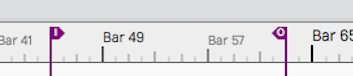
In-marker and Out-marker
Bars & Beats markers (B&B Markers) - Bars & Beats markers can be used to identify song sections, give you a visual guide to the song, and provide quick navigation to different parts of your song. They are arranged as clips on the Marker track. Bars & Beats markers appear with a musical note icon on the Marker track. They also appear as narrow pointers on the Timeline when the Marker track is closed.
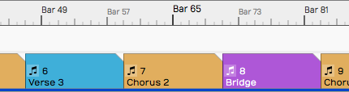
Bars & Beats Markers on the Marker Track
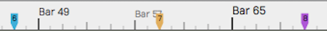
Bars & Beats Markers on the Timeline (with Marker track closed)
Timecode Markers (TC Markers) - Timecode markers mark a specific time offset into the Edit, and are not dependent on tempo changes. They can can aid with navigation, especially when working with video. TC markers appear as clips with a clock icon on the Marker track. They appear as rounded pointers on the Timeline if the Marker track is closed.
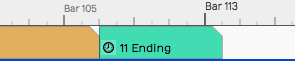
Timecode Marker on the Marker Track
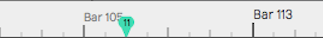
Timecode Marker on the Timeline (with Marker track closed)
📝 Note: In Waveform, the term 'marked region' means the range of an edit that occurs between the In-marker and the Out-marker.
Wave File Markers - You can add yellow arrows directly to Wave files that then appear on Audio clips. These are the least useful type of markers. More about them near the end of this chapter.
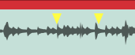
Wave File Markers
In-marker & Out-marker¶
Position the In-marker and Out-marker by dragging the I and O flags along the Timeline. The In-marker and Out-marker together define the range over which playback will loop when the Loop button in engaged in the transport bar. They also define what is called the "marked region" used for numerous editing actions.
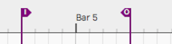
The In-marker & Out-marker
Pressing I will locate the In-marker to the cursor position. Pressing O locates the the Out-marker to the cursor position.
You can alternatively "draw" in the range between the In-marker and Out-marker. Double-click on the Timeline and start dragging right. Double-click positions the In-marker at the starting point. As you drag right, the Out-marker comes along to set the out point when you lift the mouse button.
💡 Tip: To set the marked region over a selection of clips and press A. This also works for Marker clips making it a great way to set the In-marker and Out-marker over a song section.
Navigate Using the In-marker & Out-marker¶
You can quickly navigate to the In-marker or Out-marker using the square
bracket keys. Press [ to locate the cursor to the In-marker; Press ]
to locate the cursor to the Out-marker.
Zooming to the In-marker/Out-marker¶
When you have a marked region set between the In-marker and Out-marker you can quickly zoom in to that region. To do that, right-click the Timeline and select Zoom to show the marked region or simply to press F7.
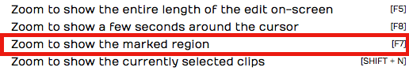
Right-click the Timeline, Zoom to In-marker/Out-marker
Looping Playback Over the Marked Region¶
To continuously repeat playback over a section of your tune, set the In-marker and Out-marker to define the loop range. Turn on looped playback by engaging the Loop button (L). Playback will repeat that section over and over until you stop playback.
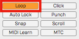
Enabling Loop Playback
📝 Note: When Loop is enabled, playback will only play within the marked region. If the cursor is located earlier than the In-marker or after the Out-marker when you press Play, it will jump to the In-marker and play from there.
Auto Punch and the Marked Region¶
To use Auto Punch, first set the In-marker and Out-marker over the range where you want to punch in. Enable the Punch button (P) in the Master section. Make sure Loop is turned off. Now enable a track for recording, position the cursor before the In-marker and press Record on the Transport. Even though the track is armed for recording, no recording will happen until the cursor gets to the In-marker.
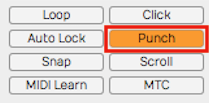
Enabling Auto Punch Recording
💡 Tip: Auto punch recording means that recording is only allowed between the In-marker and Out-marker. Also, punch recording only works when Loop is off.
The Marker Track¶
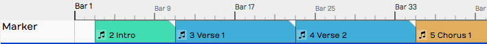
Marker Track
Let's take a closer look at the Marker track. You can open and close the Marker track with the Marker track show/hide button.
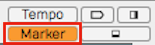
Marker Track Show/Hide Button
The Marker track can contain either Bars & Beats markers or Timecode markers. If you don't like to see the types mixed together on the same track, there is an additional split mode that shows each type on separate lanes.
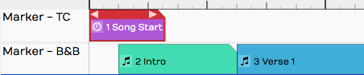
Marker Track Split Mode
To access that mode, select the Marker track by clicking the header. Then in properties, de-select Use a single track for all types of marker. In this mode, the Marker track has two lanes. The top lane shows Timecode Markers and the bottom lane shows Bars & Beats Markers.
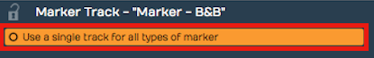
Marker Track properties Setup for Split Mode
📝 Note: F10 is my assignment for the keyboard action Toggle the marker view mode. Pressing F10 cycles through the three marker track states - hidden, normal, and split mode.
💡 Tip: You can click on any blank space in the Marker track to instantly position the cursor.
Adding Markers¶
Here are the various ways to add markers to the Marker track:
Drag the Clip Object - Drag the Clip object to the Marker track and choose which type of Marker to create. This creates a Marker clip you can drag and resize. It has left and right trim handles to adjust the length. You can also drag a marker by its header and move it around. If the Marker track is in split mode, the type of Marker (B&B or TC) is determined by which lane you drop the Clip object on.
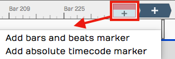
Adding a Marker by Dragging the Clip Object
Press Return - The Return key (Enter on PCs) has several functions related to Marker navigation during playback. At the most basic level, pressing Return adds a new Marker at the cursor position. The type of Marker clip matches the most recently added Marker. If a Marker clip is selected, it adds one of that type. Markers added with Return, use the next available sequential Marker number.
Right-click the Marker Track Header - Right-click the Marker track header and choose which type of marker to add at the cursor position.
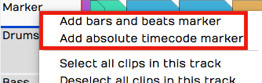
Add a Marker from the Marker Track Right-click Menu
Marker Track properties Buttons - Click the Marker track header to select it, then look in properties. There you will find the buttons New Bars & Beats Marker and New Absolute TC Marker.
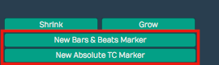
Add a Marker from Marker Track properties
Browser Markers Tab Add Button - You can add either kind of Marker Clip using the selections on the Browser, Markers tab.
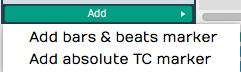
Add a Marker from the Browser, Markers Tab
Marker Clip properties¶
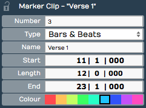
Marker Clip properties
Marker clips behave like other clips in several ways. You can adjust the length using the trim handles, you can split them, drag them, duplicate them, or nudge them. They also contain several properties, described below:
Number - Marker numbers are issued sequentially as you add Marker clips. You can edit the Number property if you want. If you change Number to one that is already in use, then the other clip will be assigned the next available number. Marker numbers can be used for quick navigation during playback.
💡 Tip: If you feel compelled to renumber all your Markers to get them into a nice sequential order, you might want to skip some numbers, in order to make it easier to insert new Markers. For example, if you have a lot of markers in the song, you could re-number them by 5s.
Type - Type allows you choose which type of Marker clip you want: Bars & Beats or Absolute. Bars & Beats markers adjust to the tempo changes in the song. Timecode markers are fixed to a specific time offset into the Edit and are not affected by tempo changes.
📝 Note: Timecode markers are also called "absolute markers", "TC markers", or "absolute timecode markers" within Waveform. All those terms refer to the same thing. For this book, I usually call them Timecode markers.
Name - The Name property sets the name shown on the Marker clip. By default it will be "New Marker." Most users rename it based on song section. For example: Intro, Verse, Chorus, Bridge, or Outro.
Start - The Start property shows the bar, beat and tick start time for B&B markers. For Timecode markers it shows Hours/Minutes/Seconds/Milliseconds. For either type, you can edit Start directly to move the marker to a different location.
Length - Similarly, Length shows B&B marker length in Bars/Beats/Ticks format. For Timecode markers, it shows length as Hours/Minutes/Seconds/Milliseconds. Edit the Length property and the Marker clip length will change to match.
End - End values are in the same format as the Start property. Edit it to change the ending time. When you change the End value, Length gets adjusted to match. Start always remains the same. If you edit End to fall before Start, it will be set to match the Start time. In that case, Length gets set to zero.
Colour - Choose from one of the nice colors. This sets all selected Marker clips to the color you choose.
💡 Tip: You can change a Marker clip from Bars & Beats to Timecode using nudge. Press F10 until the Marker track split mode is showing. Select the marker clip to convert and press Shift-up or Shift-down to nudge the clip to the other lane.
Navigating by Markers¶
Once you have Markers set up, you can quickly navigate using the Marker number and the Return key. Just type in a Marker number like '5' or '11' and hit Return ('Enter' on PCs). As you type the number you will see it appear in green in the upper right of the Waveform window. When you see the number, you have about two seconds hit Return before the number disappears.
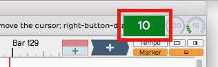
Marker Number As It Appears Momentarily
If you enter a number that doesn't have a matching Marker, then Waveform will insert a marker with that number at the cursor. Also, if you just press Return, a Marker clips is inserted at the cursor position.
Undo (Cmd + Z / Ctrl + Z) removes a marker if you didn't intend to insert it.
💡 Tip: The Number + Return approach to navigation works during playback but also works when Waveform is idle. If it doesn't seem to be working when playback is idle, click the header of the Marker track or select any marker and try again.
The Browser Markers Tab¶
Use the Browser Markers tab to add Bars & Beats or Timecode markers to the Marker track. You can also use it navigate to any marker by double-clicking on the marker name in the list. You can also quickly delete the selected marker or change its name in properties.
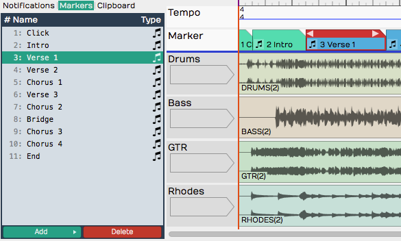
Browser, Markers Tab
Select marker clips - Single-click a marker in the list to select it.
Navigate to a marker clip - Double-click on a marker in the list to jump to that position. This works during playback too.
Rename a marker - Click a marker to select it. Then, edit the Name property in properties.
Add a Marker - Click Add at the bottom of the Markers tab. Select from the two types: Absolute timecode marker and Bars & Beats Marker.
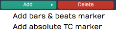
Adding a Marker from the Markers Tab
Delete a Marker - Select a marker in the list and click Delete or just press Delete on your keyboard. Undo (Cmd + Z / Ctrl + Z) restores a deleted marker.
Change a Marker from one Type to the Other - Select the Marker and edit the Type property in properties. Or drag it from the TC Marker track to the B & B Marker track or vice-versa.
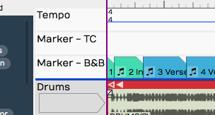
Absolute Timecode Marker Track - Marker - TC**
Renumbering Markers¶
It is sometimes too easy to get your marker numbers out of order, but there is an easy trick to renumber them: Open the Markers tab in the Browser. Select all of the markers and edit the Number property. For example if it shows "1" with all the markers selected change it to "2." The markers instantly renumber starting from "2." If you really want them numbered starting from one, simply do it again, changing the Number property back to one.
Adjust Markers (Wave File Markers)¶
There is another type of marker in Waveform, also called "markers." They appear to mark spots in a clip, but actually are stored in the underlying Wave files. You work with these markers from the Adjust Markers actions in Audio clip properties. You also add and remove them by dragging the marker object in Audio clip properties View Source Info.
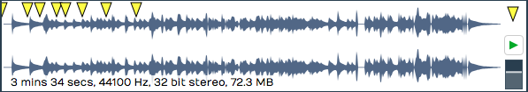
Wave File Markers in View Source Info
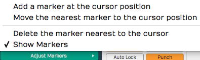
Adjust Markers Options in Audio Clip properties
Moving On¶
Markers can be extremely useful in the context of recording and editing. Not only do they keep your project organized, they also provide easy navigation into important locations within the Edit.